컴퓨터활용능력-1급 (2011-03-20 기출문제)
1과목: 컴퓨터 일반
1. 다음 중 <표1>과 <표2>에 표시된 용어 간 관련성이 높은 것끼리 연결한 것으로 옳은 것은?(일부 컴퓨터에서 원문자가 보이지 않아서 괄호 안에 다시 표기하여 둡니다.)
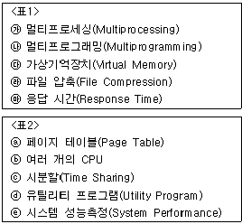
- ㉮⇔ⓑ, ㉯⇔ⓒ, ㉰⇔ⓐ, ㉱⇔ⓓ, ㉲⇔ⓔ(가⇔b, 나⇔c, 다⇔a, 라⇔d, 마⇔e)
- ㉮⇔ⓑ, ㉯⇔ⓒ, ㉰⇔ⓐ, ㉱⇔ⓔ, ㉲⇔ⓓ(가⇔b, 나⇔c, 다⇔a, 라⇔e, 마⇔d)
- ㉮⇔ⓒ, ㉯⇔ⓑ, ㉰⇔ⓐ, ㉱⇔ⓓ, ㉲⇔ⓔ(가⇔c, 나⇔b, 다⇔a, 라⇔d, 마⇔e)
- ㉮⇔ⓒ, ㉯⇔ⓑ, ㉰⇔ⓓ, ㉱⇔ⓐ, ㉲⇔ⓔ(가⇔c, 나⇔b, 다⇔d, 라⇔a, 마⇔e)
(정답률: 55%)

2. 다음 중 컴퓨터가 현재 실행하고 있는 명령을 끝낸 후 다음에 실행할 명령의 주소를 기억하고 있는 레지스터는?
- 명령 레지스터(Instruction Register)
- 프로그램 계수기(Program Counter)
- 부호기(Encoder)
- 명령 해독기(Instruction Decoder)
(정답률: 56%)
3. 다음 중 외부로부터의 데이터 침입행위에 관한 유형의 위조(Fabrication)에 대한 설명으로 옳은 것은?
- 자료가 수신측으로 전달되는 것을 방해하는 행위
- 전송한 자료가 수신지로 가는 도중에 몰래 보거나 도청하는 행위
- 원래의 자료를 다른 내용으로 바꾸는 행위
- 자료가 다른 송신자로부터 전송된 것처럼 꾸미는 행위
(정답률: 55%)
4. 다음 중 한글 Windows XP의 특징에 관한 설명으로 옳지 않은 것은?
- 컴퓨터를 다시 시작하지 않고도 사용자 계정을 전환할 수 있다.
- [Windows 방화벽]을 이용하면 다른 컴퓨터에서 무단으로 액세스하려는 바이러스를 치료하기 위한 백신을 사용할 수 있다.
- Boot.ini 파일을 이용하여 다중 부팅 메뉴에 대한 정보를 확인하거나 수정할 수 있다.
- FAT나 FAT32에 비교하여 성능, 보안, 안정성 면에서 우수한 NTFS를 사용할 수 있다.
(정답률: 68%)
5. 다음 중 한글 Windows XP에서 컴퓨터에 설치되어 있는 모든 하드웨어의 등록 정보를 보기 위한 순서로 올바른 것은?
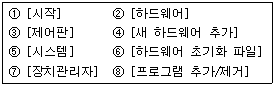
- ①-②-③-④-⑥
- ①-③-②-⑧-⑦
- ①-②-③-⑤-⑥
- ①-③-⑤-②-⑦
(정답률: 71%)
6. 다음 문장이 설명하는 용어로 옳은 것은?
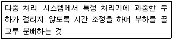
- Load map
- Load segent
- Load balancing
- Loading address
(정답률: 81%)
7. 컴퓨터에 설치되어 있는 CD-RW 드라이브는 읽기 52배속, 쓰기는 32배속까지 지원한다고 하자. 이 CD-RW를 이용하여 데이터를 기록하면 1초에 몇 바이트를 기록할 수 있는가? (단, 1MB = 1,000KB)
- 약 1.8MB/sec
- 약 4.8MB/sec
- 약 7.8MB/sec
- 약 9.8MB/sec
(정답률: 55%)
8. 다음 중 한글 Windows XP에서 관리하는 가상 메모리는 실제로 어떤 장치를 사용하는가?
- 주기억 장치
- 캐시 기억 장치
- 프로세서 장치
- 하드디스크 장치
(정답률: 43%)
9. 다음 중 멀티미디어 컨텐츠에서 각 객체의 배치나 출력의 타이밍, 사용자의 조작에 대한 응답 방법 등을 기술하는 언어의 표준을 책정하는 ISO의 전문가 위원회의 명칭 및 그 규격명을 의미하는 것으로 옳은 것은?
- MPEG
- ASF
- MHEG
- SGML
(정답률: 35%)
10. 다음 내용이 설명하는 것으로 옳은 것은?
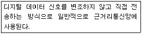
- 단방향 전송
- 반이중 전송
- 베이스밴드 전송
- 브로드밴드 전송
(정답률: 59%)
11. 다음 중 원격지에 있는 컴퓨터에 접속하여 프로그램을 실행시키거나 시스템 관리 작업 등을 할 수 있는 서비스는?
- FTP
- IRC
- Telnet
- Archie
(정답률: 69%)
12. 다음 중 제한된 색상을 조합하여 새로운 색을 만드는 작업을 뜻하는 그래픽 기법으로 옳은 것은?
- 랜더링(Rendering)
- 디더링(Dithering)
- 모델링(Modeling)
- 리터칭(Retouching)
(정답률: 68%)
13. 다음 중 한글 Windows XP의 사용법으로 옳지 않은 것은?
- 시작 메뉴를 실행할 때에는 해당 메뉴를 마우스 왼쪽 단추로 클릭하거나, 메뉴에 표시된 키를 누른다.
- 시작 메뉴의 특정 항목을 [Ctrl]을 누른채 바탕화면으로 드래그하면 복사된다.
- 현재 화면에 표시된 바로가기 메뉴를 키보드를 이용하여 닫을 때는 [Alt] 키를 누른다.
- 키보드의
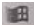
+[Pause]를 누르면 모든 창이 최소화된다.
(정답률: 49%)
14. 다음 중 인터넷과 관련하여 전자 우편에 쓰이는 프로토콜에 관한 설명으로 옳지 않은 것은?
- POP3는 메일 서버에 도착한 이메일을 사용자 컴퓨터로 가져올 수 있도록 메일 서버에서 제공하는 프로토콜이다.
- SMTP는 사용자의 컴퓨터에서 작성한 메일을 다른 사람의 계정이 있는 곳으로 전송해 주는 역할을 하는 프로토콜이다.
- MIME은 웹 브라우저가 지원하지 않은 각종 멀티미디어 파일의 내용을 확인하고 실행시켜 주는 프로토콜이다.
- IMAP은 분야별로 공통 관심사를 갖는 인터넷 사용자들이 같은 이메일 서버를 사용할 수 있도록 제공해 주는 프로토콜이다.
(정답률: 53%)
15. 다음 중 한글 Windows XP에서 네트워크 관련 명령에 대한 설명으로 옳지 않은 것은?
- route : 로컬 IP 라우팅 테이블에서 항목을 표시하거나 변경한다.
- ping : TTL필드 값을 점차적으로 늘려 ICMP 에코 요청 메시지를 대상 위치로 보냄으로써 대상 위치의 경로를 확인한다.
- nslookup : DNS 인프라를 진단하는 데 사용하는 정보를 표시한다.
- netstat : 활성 TCP 연결 상태, 컴퓨터 수신 포트, 이더넷 통계 등을 표시한다.
(정답률: 57%)
16. 다음 중 한글 Windows XP에서 네트워크로 연결된 컴퓨터들 사이에 프린터를 공유하기 위한 설명으로 옳지 않은 것은?
- 네트워크로 연결된 다른 컴퓨터에게 프린터 사용을 허용하기 위해서는 [공유]가 설정되어야 한다.
- [시작]-[제어판]-[프린터 및 팩스]에서 프린터를 선택하고 바로 가기 메뉴에서 [공유]를 선택하면 해당 프린터가 공유된다.
- 공유된 프린터의 바로 가기 아이콘은 바탕화면에 만들 수 있다.
- 자신의 컴퓨터에 이미 기본 프린터가 설정되어 있는 경우 네트워크 프린터를 기본 프린터로 추가하면 기본프린터가 두 개가 설정된다.
(정답률: 81%)
17. 다음 중 한글 Windows XP의 인쇄 작업에 대한 설명으로 옳지 않은 것은?
- 프린터에서 인쇄 작업이 시작된 경우라도 잠시 중지 시켰다가 다시 이어서 인쇄가 가능하다.
- 여러 개의 출력 파일들의 출력대기 상태를 확인할 수 있다.
- 여러 개의 출력 파일들이 출력 대기할 때 출력 순서를 임의로 조정할 수 있다.
- 일단 프린터에서 인쇄 작업에 들어간 것은 프린터 전원을 끄기 전에는 강제로 종료시킬 수 없다.
(정답률: 75%)
18. 다음 중 한글 Windows XP의 [보조프로그램]에 있는 [메모장]에 관한 설명으로 옳지 않은 것은?
- 간단한 문서 또는 웹 페이지를 만들 때 사용할 수 있는 기본 텍스트 편집기이다.
- 메모장으로 작성된 파일을 ANSI, 유니코드, UTF-8 등의 인코딩 형식으로 저장할 수 있다.
- 자동 줄 바꿈, 찾기, 시간/날짜 삽입 등의 기능을 제공한다.
- 문서의 일부 영역에 글꼴 서식을 별도로 지정할 수 있다.
(정답률: 54%)
19. 다음 중 음성 또는 영상의 아날로그 신호를 디지털 신호로 변환하거나 그 반대로 디지털 신호를 아날로그 신호로 환원하는 장치는?
- 허브(HUB)
- 디지털 서비스 유니트(DSU)
- 코덱(CODEC)
- 통신제어장치(CCU)
(정답률: 77%)
20. 다음 중 출력장치인 디스플레이 어댑터와 모니터에 관련된 용어의 설명으로 옳지 않은 것은?
- 픽셀(Pixel) : 화면을 이루는 최소의 단위로서 같은 크기의 화면에서 픽셀 수가 많을수록 해상도가 높아진다.
- 해상도(Resolution) : 모니터 화면의 픽셀 수와 관련이 있으며 픽셀 수가 많을수록 표시할 수 있는 색상의 수가 증가한다.
- 점 간격(Dot Pitch) : 픽셀들 사이의 공간을 나타내는 것으로 간격이 가까울수록 영상은 선명하다.
- 재생률(Refresh Rate) : 픽셀들이 밝게 빛나는 것을 유지하기 위한 것으로, 재생률이 높을수록 모니터의 깜빡임이 줄어든다.
(정답률: 74%)
2과목: 스프레드시트 일반
21. 다음 중 입력한 데이터에 지정된 표시형식에 따른 결과가 옳은 것은?
- 입력자료 : 24678 표시형식 : #.## 결과 : 24678
- 입력자료 : 20⑤-04-⑤ 표시형식 : mm-dd 결과 : Apr-04
- 입력자료 : 14500 표시형식 : [DBNum2]G/표준 결과 : 壹萬四阡伍百
- 입력자료 : 0.457 표시형식 : 0% 결과 : 45.7%
(정답률: 47%)
22. 다음 중 작성된 매크로의 내용을 수정하는 방법으로 옳은 것은?
- 작성된 매크로는 수정할 수 없으므로 재작성해야 한다.
- [도구] → [매크로] → [Microsoft Script Editor]를 사용하여 수정해야 한다.
- [도구] → [매크로] → [새 매크로 기록]의 [매크로 기록]대화상자의 [편집]을 이용하여 수정해야 한다.
- [도구] → [매크로] → [Visual Basic Editor]를 사용하여 수정해야 한다.
(정답률: 58%)
23. 연이율은 5%로 고정되어 있고 매달 5000원씩 10년 동안 저금했을 때 복리로 계산하여 원금과 이자의 합인 만기 금액을 구하는 수식으로 옳은 것은?
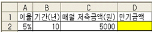
- =FV(A2/12,B2*12,-C2)
- =FV(A2,B2,C2)
- =PV(A2/12,B2*12,-C2)
- =PV(A2,B2,C2)
(정답률: 55%)
24. 다음 중 차트 편집에 관한 설명으로 옳지 않은 것은?
- 차트 제목이나 축 문자열의 각도를 바꿀 수 있다.
- 작성된 차트의 데이터 계열 위치를 행에서 열로 바꾸려면 [차트 옵션] 메뉴에서 가능하다.
- 차트에 표시된 범례를 [차트 옵션] 메뉴에서 표시되지 않도록 할 수 있다.
- [3차원 보기] 메뉴는 3차원 형태의 차트에서만 실행 가능하다.
(정답률: 34%)
25. 다음 중 엑셀의 화면 제어에 관한 설명으로 옳지 않은 것은?
- 두 개 이상의 파일을 함께 보려면 [창]-[정렬] 메뉴를 이용한다.
- 확대/축소 배율은 지정한 시트에만 적용된다.
- [도구]-[옵션]의 [일반] 탭에서 'IntelliMouse로 화면 확대/축소' 옵션을 체크하면 <Ctrl>을 누르지 않은 상태에서 마우스의 스크롤 버튼만으로 화면의 축소 및 확대가 가능하다.
- 틀 고정에 의해 분할된 왼쪽 또는 위쪽 부분은 인쇄 시 반복할 행과 반복할 열로 자동 설정된다.
(정답률: 54%)
26. 다음 중 차트의 오차 막대에 관한 설명으로 옳지 않은 것은?
- 데이터 계열의 각 데이터 표식에 대한 오류 가능성이나 불확실성의 정도를 표시한다.
- 3차원 세로 막대형 차트에서 사용 가능하다.
- 고정값, 백분율, 표준편차, 표준오차 등으로 설정 할 수 있다.
- 분산형과 거품형 차트에 x값, y값, 또는 이 두 값 모두에 대한 오차 막대를 나타낼 수 있다.
(정답률: 47%)
27. 다음 중 매크로를 저장할 수 있는 위치가 아닌 것은 ?
- 새 통합 문서
- 현재 통합 문서
- 공유 통합 문서
- 개인용 매크로 통합 문서
(정답률: 61%)
28. 다음과 같은 워크시트에서 <프로시저1>을 실행시켰을 때 나타나는 결과로 옳은 것은?
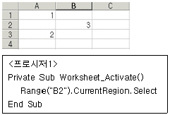
- [B2]셀이 선택된다.
- [A1:B2]셀이 선택된다.
- [A1:B3]셀이 선택된다.
- [A1:C3]셀이 선택된다.
(정답률: 41%)
29. 다음 레코드 관리 대화 상자에 대한 설명으로 옳은 것은?
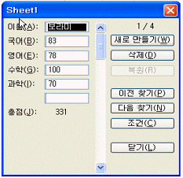
- 키보드의 <Page Down>을 누르면 새로운 데이터를 입력할 수 있는 화면이 표시된다.
- 총점 필드는 수식으로 작성되어 있는 열이므로 레코드 관리 대화상자에서 값을 수정하려면 [도구]-[옵션]-[편집]에서 설정하여야 한다.
- [삭제] 버튼을 클릭하면 현재 표시된 레코드를 삭제하며, 삭제된 레코드는 [복원] 버튼으로 되살릴 수 있다.
- 조건 입력 시 여러 필드에 조건을 입력할 수 있는데 입력된 조건들은 '또는'(OR)으로 결합된다.
(정답률: 26%)
30. 다음 중 셀 범위에 이름을 작성할 때의 조건으로 옳지 않은 것은?
- 같은 통합 문서 내에서는 시트가 다르더라도 이름은 유일하여야 한다.
- 이름에는 +, -, *, ?와 같은 특수문자는 포함될 수 없다.
- 정의된 이름은 참조 시 절대 참조 방식으로 사용된다.
- 이름은 대소문자를 구분하므로 [A1] 셀에 N1, [B1]셀에 n1 이라고 이름을 설정할 수 있다.
(정답률: 46%)
31. 다음 시트의 데이터를 이용하여 =HLOOKUP("1분기실적", A2:C7, 3) 수식의 결과 값으로 옳은 것은?
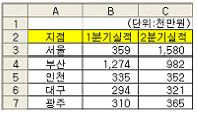
- 335
- 1,580
- 1,274
- 982
(정답률: 47%)
32. 다음 중 엑셀의 데이터 가져오기에 대한 설명으로 옳지 않은 것은?
- Query를 사용하여 관계형 데이터베이스, 텍스트 파일의 데이터를 엑셀에서 읽어 들이려면 ODBC 드라이버가 필요하다.
- 여러 테이블을 조인하는 경우 데이터 연결 마법사를 이용한다.
- 외부 데이터를 엑셀로 가져오려면 해당 데이터를 액세스할 수 있어야 한다.
- OLAP 데이터 원본을 읽어 들이려면 데이터 원본 드라이버가 필요하다.
(정답률: 24%)
33. 다음 중 데이터 통합에 대한 설명으로 옳지 않은 것은?
- 데이터 통합은 여러 셀 범위를 통합하여 합계, 평균, 최대값, 최소값, 표준 편차 등을 계산할 수 있는 기능이다.
- 서로 다른 통합 문서에 분산 입력된 데이터를 통합하기 위해서는 모든 통합 문서를 열어 놓고 실행해야 한다.
- 참조 영역의 범위에 열 이름표와 행 이름표를 복사할 것인지를 설정하려면 '사용할 레이블'에서 옵션을 체크한다.
- '원본 데이터에 연결' 옵션을 선택하면 원본 데이터의 변경이 통합된 데이터에 즉시 반영된다.
(정답률: 54%)
34. 다음 중 배열 수식과 배열 상수에 관한 설명으로 옳지 않은 것은?
- 배열 상수에는 숫자, 텍스트, TRUE나 FALSE 등의 논리값, #N/A와 같은 오류 값이 들어갈 수 있다.
- 배열 수식을 만드는 방법은 수식을 입력한 후 <Ctrl>+ <Shift>+<Enter>를 누르는 것 외에는 다른 수식을 만들 때와 똑같다.
- 배열 수식은 배열 인수라는 두 개 이상의 값 집합에 대해 수행되며, 배열 인수 각각은 동일한 개수의 행과 열을 가져야 한다.
- 셀 참조, 길이가 다른 열, 달러($) 기호, 백분율(%) 기호 등은 배열 상수에 포함될 수 있다.
(정답률: 47%)
35. 다음의 피벗 테이블 도구 모음에서 필드 설정 창에 있는 표시 형식이나 사용할 함수 등을 설정할 수 있는 아이콘으로 옳은 것은?(제외된 문제, 문제 출제당시 오피스 2003 기준으로 출제되어 현재는 제외된 문제 입니다. 참고만 하세요.)
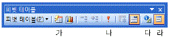
- 가
- 나
- 다
- 라
(정답률: 33%)
36. 다음 중 조건부 서식에 관한 설명으로 옳지 않은 것은?
- 셀에 입력된 값에 따라 데이터 막대를 표시할 수 있다.
- 셀 값이 조건과 일치하거나 수식의 결과가 참일 때만 지정된 서식이 적용된다.
- 해당 셀이 여러 개의 조건을 동시에 만족하는 경우 마지막에 지정한 조건의 서식으로 설정된다.
- 조건을 만족하는 데이터가 있는 행 전체에 서식을 지정할 때는 조건 입력 시 열 이름 앞에만 '$'를 붙인다.
(정답률: 53%)
37. 다음 중 [창 정렬]을 통해 배열된 다른 엑셀 통합 문서로 작업 화면을 전환할 때 사용되는 바로 가기 키로 옳은 것은?
- <Alt> + <Tab>
- <Ctrl> + <Alt> + <Tab>
- <Ctrl> + <Enter>
- <Ctrl> + <Tab>
(정답률: 38%)
38. 인쇄할 시트의 이름이 ‘Sheet6’인 경우 그림과 같이 머리글에 시트 이름을 표시하는 방법으로 옳은 것은?
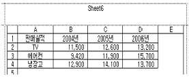
- [페이지 설정] 대화 상자의 [시트] 탭에서 [행/열 머리글]을 선택한다.
- [페이지 설정] 대화 상자의 [머리글/바닥글] 탭에서 [머리글 편집]을 선택한다.
- [페이지 설정] 대화 상자의 [머리글/바닥글] 탭에서 [행/열 머리글]을 선택한다.
- [인쇄] 대화 상자에서 [시트명 포함]을 선택한다.
(정답률: 49%)
39. 다음과 같이 프로시저를 작성하였을 경우 실행 결과로 옳은 것은?
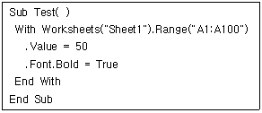
- Sheet1 워크시트의 [A1:A100] 셀에 글자 크기를 50, 글꼴 스타일을 '굵게'로 지정한다.
- Sheet1 워크시트의 [A1:A100] 셀에 모두 50을 입력한 후 글꼴 스타일을 '굵게'로 지정한다.
- Sheet1 워크시트의 [A1:A100] 셀에 글자 크기는 50으로 지정하고, 글꼴 스타일 '굵게'를 해제한다.
- Sheet1 워크시트의 [A1:A100] 셀에 모두 50을 입력한 후 글꼴 스타일 '굵게'를 해제한다.
(정답률: 61%)
40. 다음 시트에서 기본급과 상여금의 합계를 [D2:D5] 영역에 배열수식을 이용하여 표시하였다. 다음 설명 중 옳지 않은 것은?(본 문제는 시트 그림이 주어지지 않고 푸는 문제 입니다. 내용만으로 시트를 상상해서 푸셔야 합니다.)
- [D2:D5] 셀을 범위로 설정한 후 {=B2:B5+C2:C5}을 입력하고<Ctrl>+<Shift>+<Enter>를 누른다.
- 여러 개의 셀을 범위로 설정한 후 배열 수식을 이용하여 입력한 경우에는 하나의 범위로 관리된다.
- 배열수식 범위의 일부분을 편집하려면 오류 대화 상자가 표시된다.
- [D2:D5] 영역에 입력된 배열수식은 모두 {=B2:B5+C2:C5}로 동일하다.
(정답률: 33%)
3과목: 데이터베이스 일반
41. 다음 중 폼에 대한 설명으로 옳지 않은 것은?
- 데이터의 입력 및 편집 작업을 위한 일종의 인터페이스이다.
- 바운드 폼은 테이블이나 쿼리의 레코드와 연결되어 있는 폼을 말한다.
- 자동 폼은 기본적으로 두 개 이상의 테이블이나 쿼리를 원본으로 생성된다.
- 테이블 및 쿼리에는 이벤트를 지정할 수 없지만 폼에는 이벤트를 지정하여 여러 가지 작업을 수행할 수 있다.
(정답률: 41%)
42. 다음 중 현재 폼에서 활성화되어 있는 ShipForm 폼의 DateDue 컨트롤의 Visible 속성을 참조하는 방법으로 옳은 것은?
- Forms![ShipForm]![DateDue].Visible
- Forms.[ShipForm]![DateDue].Visible
- Forms![ShipForm].[DateDue]!Visible
- Forms.[ShipForm].[DateDue].Visible
(정답률: 36%)
43. 다음 쿼리 문에 대한 설명으로 옳은 것은?(문제 오류로 여기서는 1번을 정답 처리 합니다.)
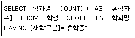
- 구문의 오류로 인해 실행될 수 없는 쿼리이다.
- 쿼리를 실행하면 5개의 필드가 출력된다.
- 학과명 별로 휴학중인 학생들의 인원수를 표시한다.
- 휴학 중인 학생 수가 가장 많은 학과를 표시한다.
(정답률: 67%)
44. 다음 중 테이블의 특정 필드에서 1부터 4까지의 값만을 입력을 받으려고 할 때 설정할 유효성 검사 규칙으로 옳은 것은?
- >=1 and <=4
- <=1 and >=4
- >1 or <4
- <1 or >4
(정답률: 71%)
45. 다음 중 SQL의 insert 문에 대한 설명으로 옳지 않은 것은?
- 여러 테이블에 동시에 데이터를 추가할 수 없고, 하나의 테이블에만 추가할 수 있다.
- insert ... select 문을 이용하여 한 개의 테이블에 여러 개의 레코드를 동시에 추가할 수 있다.
- insert into 거래처 (거래처명, 연령) set ('홍길동', 32) 과 같은 방식으로 사용한다.
- 테이블의 모든 필드에 대해 값을 입력할 때는 필드 이름을 생략할 수 있다.
(정답률: 32%)
46. 다음 중 보고서의 페이지 설정 창에서 '데이터만 인쇄'옵션을 선택했을 때 인쇄되는 것으로 옳은 것은?
- 콤보상자의 모양
- 선이나 사각형으로 작성한 모양
- 레이블로 작성한 보고서의 제목
- 텍스트 상자에서 표시하는 값
(정답률: 68%)
47. 다음과 같이 필드의 속성을 설정한 경우, 입력 값에 대한 결과가 옳지 않은 것은?
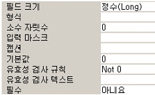
- 1.2를 입력하면 1의 값이 저장된다.
- 0.2를 입력하면 0의 값이 저장된다.
- 1234를 입력하면 1234가 된다.
- 1,234를 입력하면 1234가 된다.
(정답률: 46%)
48. 다음 중 다른 테이블을 참조하는 외래 키에 대한 설명으로 옳은 것은?
- 외래 키 필드의 값은 유일해야 하므로 중복된 값이 입력될 수 없다.
- 외래 키 필드의 값은 Null 값일 수 없으므로, 값이 반드시 입력되어야 한다.
- 한 테이블에서 특정 레코드를 유일하게 구별할 수 있는 속성이다.
- 하나의 테이블에는 여러 개의 외래키가 존재할 수 있다.
(정답률: 56%)
49. 다음 중 인덱스에 대한 설명으로 옳지 않은 것은?
- 데이터의 검색 속도를 빠르게 하기 위해 사용한다.
- 일련번호나 메모, 날짜/시간 데이터 형식의 필드에는 인덱스를 지정할 수 있다.
- 인덱스를 설정하면 데이터를 추가, 삭제할 때 성능이 떨어질 수 있다.
- 단일 필드 기본키는 인덱스 속성이 "예(중복불가능)"으로 지정되어야 한다.
(정답률: 39%)
50. 다음 쿼리문에 대한 설명으로 가장 옳지 않은 것은?
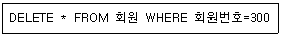
- [회원] 테이블에서 회원번호가 300인 레코드를 삭제한다.
- WHERE절 이하 부분이 없으면 아무 레코드도 삭제하지 않는다.
- 레코드를 삭제한 다음에는 삭제한 내용은 되돌릴 수 없다.
- 질의문을 실행하는 경우 레코드 수에는 변화가 있을 수 있지만 필드 수에는 변화가 없다.
(정답률: 46%)
51. 다음 중 데이터 중복성이 야기할 수 있는 문제점이 아닌 것은?
- 여러 개의 데이터가 모두 하나의 사실을 나타낸다면 논리적으로 그 내용이 같아야 하나, 실제로 중복이 있게 되면 그 동일성을 유지하기가 어렵다.
- 논리적으로 같은 데이터에 대해서는 동일한 수준의 보안이 유지되어야 하나, 여러 곳에 중복되어 있을 경우 모두 같은 수준의 보안을 유지하기가 어렵다.
- 데이터가 중복 저장되면 제어가 분산되게 되어 데이터의 무결성, 즉 데이터의 정확성을 유지하기가 어렵다.
- 데이터가 중복 저장되면 데이터 항목이 하나 첨가되는 경우 전체 레코드의 길이가 달라지기 때문에 이 파일을 접근하는 모든 응용 프로그램이 수정되어야 한다.
(정답률: 53%)
52. 다음 중 개체 관계(Entity Relationship) 모델링에 관한 것으로 옳지 않은 것은?
- 기본적으로 개체 타입(entity type)과 이들간의 관계 타입(relationship type)을 이용해서 현실 세계를 개념적으로 표현하는 방법이다.
- 개체와 개체 간의 관계를 기본 요소로 하여 현실세계를 개념적인 논리 데이터로 표현하는 방법이다.
- E-R 다이어그램의 개체 타입은 사각형, 관계 타입은 다이아몬드, 속성은 타원, 그리고 이들을 연결하는 링크로 구성된다.
- 개체(entity)는 가상의 객체나 개념을 의미하고 속성(attribute)은 개체를 묘사하는 특성을 의미한다.
(정답률: 46%)
53. 다음 중 select 구문에 관한 설명으로 옳지 않은 것은?
- "select * from t" 와 "select * from t where 1 = 1" 의 수행 결과는 같다.
- "select * from t" 에서 * 의 의미는 테이블 t의 모든 필드를 의미한다.
- order by 절은 쿼리의 결과로 반환된 레코드셋을 특정한 필드를 기준으로 정렬하여 표시할 때 사용 한다.
- order by 절에서 지정한 필드의 데이터 속성이 텍스트인 경우 오름차순으로 정렬하면 숫자(1)-영문자(A)-한글(가) 순으로 정렬된다.
(정답률: 43%)
54. 다음 중 보고서에 대한 설명으로 옳지 않은 것은?
- 보고서는 테이블이나 질의 등의 데이터를 출력하기 위한 개체이다.
- 보고서에 데이터를 재조합하여 정보를 만들어 사용 할 수 있다.
- 여러 유형의 컨트롤을 이용하여 다양한 데이터를 표시할 수 있다.
- 보고서에서 데이터의 입력, 추가, 삭제 등의 작업이 가능하다.
(정답률: 53%)
55. 다음 중 하위 폼에 대한 설명으로 옳지 않은 것은?
- 하위 폼을 만들기 위해서는 두 테이블 간에 일대 다의 관계를 반드시 설정해 두어야 한다.
- 기본 폼과 하위 폼을 연결할 필드의 이름은 달라도 되지만, 데이터 형식은 같거나 호환이 되어야 한다.
- 기본 폼에 하위 폼을 추가하려면 도구상자에서 [하위 폼/하위 보고서] 단추를 클릭하여 추가할 수 있다.
- 하나의 기본 폼에 여러 개의 하위 폼을 포함할 수 있다.
(정답률: 49%)
56. 다음 중 전체 페이지는 100이고 현재 페이지는 10일 때 '페이지 번호'를 표현하는 식과 결과가 옳지 않은 것은?
- 식: =[Page], 결과: 10
- 식: =[Page] & "Page", 결과: 10Page
- 식: =Format([Page],"000"), 결과: 10
- 식: =[Page] & "/" & [Pages], 결과: 10/100
(정답률: 67%)
57. 다음 중 액세스에서 사용되는 데이터 형식에 대한 설명으로 옳지 않은 것은?
- 숫자 형식중 실수(Single)는 소수점을 7자리까지 표현할 수 있으며, 할당되는 크기는 4바이트이다.
- 통화 형식은 소수점 아래 7자리까지의 숫자를 저장 할 수 있으며, 할당되는 크기는 8바이트이다.
- 일련번호 형식의 필드는 업데이트되지 않으며, 일단 필드에 데이터를 입력한 후에는 데이터 형식을 일련번호로 변경할 수 없다.
- 메모 형식은 문자열과 숫자를 임의로 조합하여 65,535 개까지 입력할 수 있다.
(정답률: 32%)
58. 데이터시트 형식으로 작성된 폼을 한 화면에 하나의 레코드만 표시되도록 변경하려고 할 때 변경해야 할 폼의 속성으로 옳은 것은?
- 기본 보기
- 컨트롤 상자
- 레코드 선택기
- 탐색 단추
(정답률: 43%)
59. 다음의 수식을 보고서를 이용하여 인쇄할 경우 표시되는 결과로 옳은 것은?
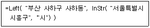
- 부산 사하
- 사하구 사하동
- 서울특별시
- 부산 사하구
(정답률: 45%)
60. 다음 중 특정 폼을 [내보내기]를 통해 다른 형식으로 바꾸어 저장하려고 할 때 지정할 수 없는 형식은?
- 서식 있는 텍스트 형식
- Microsoft Excel
- Paradox
- XML
(정답률: 54%)